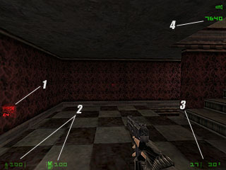
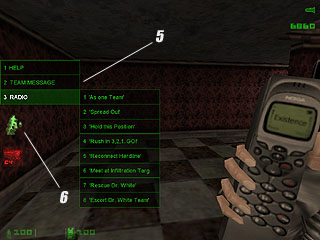
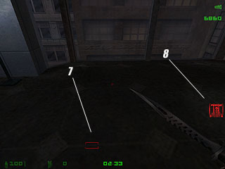
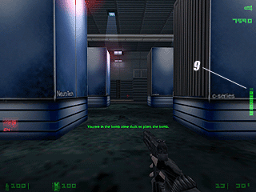

» The Hud
» The Maps
» Game Elements
» Playing
» Cvars

The hud contains a few elements you wont have seen in other modifications, or elements that look slightly different. Here are a few pictures showing you the different parts that appear at different intervals during the match.
 
 
1) Bomb Icon - This is here to tell you that YOU have the c4 and have been given the task of planting it. You can only lose it by dying.
2) Health And Armour - Your health and armour are displayed numerically, you can buy extra armour through your phone.
3) Ammo Counter - On the left is the ammo in your current clip, on the right your total ammo for the specific gun
4) Loading Points - This is your ingame currency. Buying items through your cellphone costs you loading points. These can be topped up by completing the objectives and making kills.
5) Menus - Mainly for radio messages, but also allows quick access to server information and team text messages.
6) Abilities - This displays what ability you currently have loaded. You may only load 1 ability at a time, once bought it can be used 3 times before you need to buy it again.
7) Bomb Tracker - This icon will move around your screen as you move, showing you where the bomb is once it's been dropped. If you turn away an arrow will point to where it is.
8) Jailed - This icon shows that Dr White has been captured and jailed. This is the cue for the rebels to free him.
9) Planting Timer - Like in the image, as you crouch the timer counts down till it's planted. You can still move slowly when crouched and use your weapon, but if you get up and run around it resets.